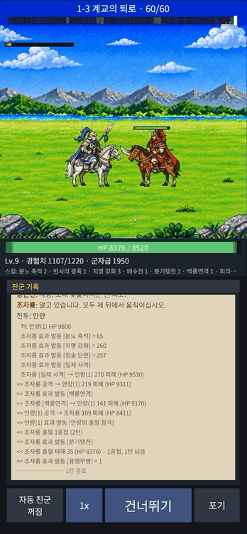

작업 목표
앞선 작업에서 런 화면을 만들었다. 조자룡이 말을 타고 달리면 배경이 겹겹이 흐르고, 지점마다 적이 나타나 대화하고 싸운다. 그런데 정작 싸움은 두 유닛이 마주 선 채 숫자만 떠오르는 모습이었다. 이번 목표는 그 전투를 보는 맛이 나는 장면으로 바꾸는 것이었다. 단, 전투의 승패를 정하는 규칙과 서버 계산은 그대로 두고 화면 쪽만 손대기로 했다.
작업 결과
같은 전투 기록을 재생한 두 장면이다. 왼쪽은 이번 작업 전, 오른쪽은 이번 작업 후다. 규칙과 피해 숫자는 같고 보이는 것만 달라졌다.


히트 스톱, 반짝임, 넉백, 효과음, 화면 흔들림, 파편, 큰 치명타 숫자, 마지막 한 방 슬로 모션.
달려가기, 찌르며 한 걸음, 밀려나기. 이 셋 말고는 아무도 제자리에서 미끄러지지 않는다.
두 장수의 가운데를 부드럽게 쫓고, 멀어지면 줌 아웃해 둘 다 화면에 담는다.
피해 계산, 서버, 저장 형식은 그대로다. 모두 화면 쪽 변경이다.
때리는 순간에 여덟 가지를 겹쳤다
타격감은 한 가지 효과로 생기지 않는다. 창이 닿는 그 순간에 여러 반응이 동시에 일어나야 묵직해진다. 적중 하나를 신호로 삼고, 그 신호에서 모든 연출을 켜고 끄도록 만들었다.
히트 스톱 · 슬로 모션
닿는 순간 유닛과 배경을 0.1초쯤 멈춘다. 이기는 전투의 마지막 한 방은 0.9초 동안 4분의 1 속도로 느리게 보여 준다. 화면 흔들림과 숫자, 카메라는 멈추지 않도록 세계의 시계와 카메라의 시계를 따로 두었다.
반짝임 · 넉백
맞은 쪽이 한순간 하얗게 반짝이고 공격자 반대로 밀려난다. 반짝임은 그림을 바꾸지 않고 머티리얼 하나로 처리했다. 넉백은 잠깐 밀렸다 돌아오는 연출이 아니라 실제 위치가 바뀌는 것으로 만들었다(아래 이동 체계).
흔들림 · 파편 · 숫자
치명타와 분노 공격에만 화면을 짧게 흔든다. 맞은 자리에서 조각이 튀어 바닥에 떨어지고, 치명타와 분노 공격의 피해 숫자는 크고 노랗게 뜬다.
타격음 세 가지
일반 · 치명 · 분노 공격의 타격음을 창이 닿는 프레임에 맞춰 낸다. 매번 높낮이를 조금씩 바꿔 같은 소리가 반복되는 느낌을 줄였다. 클라이언트에 소리 처리가 처음 들어갔다.
효과는 창이 닿는 프레임에 난다
처음에는 공격 동작의 첫 프레임에서 효과가 나서, 창을 들어 올리는데 상대가 먼저 반짝이는 어색함이 있었다. 공격 클립마다 닿는 프레임을 데이터로 두고, 피해 숫자와 체력 바의 변화까지 모두 그 프레임에 맞췄다. 조자룡의 창은 다섯 프레임 중 네 번째에 닿는다.
다가가서 친다 — 유닛이 움직이는 이유는 셋뿐
연출을 하나씩 넣다 보니 유닛이 제자리에서 미끄러지거나, 공격 뒤에 슬그머니 원래 자리로 돌아가는 장면이 자꾸 생겼다. 땜질 대신 원칙을 세웠다. 유닛의 위치는 세 가지 이유로만 바뀐다.
run 클립
때리기 전에 상대의 사거리까지 말 달리는 속도로 달려간다. 적중마다 다시 거리를 잰다.
attack 클립
공격 동작 동안 같은 속도로 한 걸음 더 나간다. 창은 사거리에서 닿는다. 분노 공격은 제자리에서 친다.
넉백
맞은 쪽이 밀려나고 그 자리에 남는다. 뒤에 아군이 있으면 함께 밀려 겹치지 않는다. 빗나가도 밀리되 효과는 없다.
움직이지 않는다
공격 뒤 돌아가지 않고, 대기 중 미끄러지지 않는다. 다음 차례가 오면 다시 1부터다.
JRPG식 복귀를 없앴다
처음 구현은 공격하러 나갔다가 제자리로 돌아오는 방식이었다. 그러면 넉백도 잠깐의 흔들림으로만 보인다. 복귀를 모두 없애고 시작 자리는 전투 첫 배치에만 쓰기로 하자, 밀고 밀리는 흐름이 화면에 그대로 남았다.
거리는 그림에서 잰다
유닛마다 공격이 닿는 앞끝과 몸통 반폭을 스프라이트에서 재어 데이터로 두었다. 사거리는 공격자의 앞끝과 상대의 반폭으로 계산하므로 창병과 장수, 보병이 각자 알맞은 거리에서 멈춘다.
움직이는 동안은 반드시 달리기 동작
“스스로 움직이는 유닛은 run 클립, 대기 중에는 위치가 바뀌지 않는다”를 자동 검사로 걸어 두었다. 전투 전체를 재생하며 20 ms마다 확인하므로, 연출을 더 넣다가 미끄러짐이 되살아나면 바로 잡힌다.
카메라는 두 장수의 가운데를 쫓는다
넉백으로 두 장수가 벌어지면 고정 카메라에서는 한쪽이 화면 밖으로 나간다. 전투 중 카메라의 목표를 공격자와 피격자의 정가운데로 두고 시간 상수 0.2초로 부드럽게 따라가게 했다. 둘이 멀어지면 여백을 두고 둘 다 들어오도록 줌 아웃하고, 가까워지면 다시 1배로 돌아온다.
가로 이동은 배경 스크롤로
카메라 뷰를 옮기면 배경 타일의 끝이 드러난다. 대신 달릴 때와 같은 방법으로 배경 레이어를 각자의 속도로 스크롤하고 유닛만 반대로 옮겨, 화면 끝이 보이지 않게 했다.
줌 아웃의 빈 곳 막기
1배보다 작게 줌 아웃하면 배경 아래와 옆이 비어 보일 수 있다. 흐르는 레이어에 타일을 한 장 더 깔고, 줌 아웃의 기준점을 지면선이 아니라 화면 바닥으로 두어 위로 하늘만 넓어지게 했다. 세트마다 최소 줌 값을 둔다.
조우와 전투 끝
적은 화면 밖에서 달려 들어와 조자룡 앞에 서고, 조자룡은 제자리에서 달린다. 카메라가 달리기 화면에서 전투 화면으로 넘어간 뒤 대사가 시작된다. 이긴 전투가 끝나면 결과 팝업 아래에서 카메라가 조자룡에게 부드럽게 돌아간다.
값은 전투를 보면서 맞춘다
히트 스톱 몇 ms, 넉백 몇 픽셀, 카메라는 얼마나 빨리 따라올지는 숫자를 보고 정할 수 없고 화면을 보고 정해야 한다. 런 화면을 에디터에서 재생하는 하네스에 Fx 그룹을 더해, 전투가 돌아가는 동안 모든 값을 슬라이더로 바꾸고 효과마다 켜고 끌 수 있게 했다.
패널에서 바꾸고 데이터 파일로 저장
- 적중 연출 여덟 가지의 세기와 시간, 켜고 끄기
- 달려가는 속도, 사거리, 찌르며 나가는 거리
- 넉백 거리와 시간, 아군 사이 최소 간격
- 카메라 여백, 따라가는 시간, 최소 줌
- 공격 클립의 닿는 프레임
- 「저장」을 누르면 데이터 파일에 그대로 쓰인다
값을 고르기 위한 장치
- 마지막 적중의 달린 시간, 디딘 거리, 착지 때 간격을 숫자로 보여 준다. 몸이 겹치면 경고가 붙는다.
- 하네스 전용 체력 배율로 조자룡과 안량이 서로 열 대 이상 주고받게 만들어, 한 전투에서 연출을 충분히 볼 수 있게 했다. 게임 데이터는 건드리지 않는다.
- 패널에 스크롤과 접기를 넣어 창을 키우지 않아도 모든 값에 닿는다.
만들면서 알게 된 것
연출은 넣는 것보다 서로 맞물리게 하는 것이 어려웠다. 하네스에서 전투를 돌려 보고 고친 것들이다.
시계는 둘이어야 한다
히트 스톱을 게임 전체 시간으로 멈추면 화면 흔들림과 카메라까지 같이 멈춰 오히려 끊긴다. 유닛과 배경이 쓰는 시계와 카메라 · 연출이 쓰는 시계를 나누자 멈춘 순간에도 화면은 살아 있었다.
예외 규칙은 금방 쌓인다
“연속 공격은 마지막 타에만 넉백”, “공격자가 밀린 만큼 따라 들어가기” 같은 규칙을 하나씩 넣다 보니 서로 꼬였다. “적중마다 다가가서 친다”는 원칙 하나로 바꾸자 예외가 모두 필요 없어졌다.
한 걸음은 동작 전체에 걸쳐야 한다
찌르며 나가는 한 걸음을 첫 프레임에만 넣었더니 8 fps 클립에서는 한 프레임 안에 끝나 제자리 찌르기로 보였다. 공격 동작의 첫 프레임부터 마지막 프레임까지 같은 속도로 나가게 하자 비로소 “달려와 찌른다”가 됐다.
적도 달려야 한다
적이 다가올 때 달리기 클립 없이 서 있는 그림 그대로 미끄러지고 있었다. 영상으로 찍어 프레임을 뜯어보고서야 보였다. 움직이면 반드시 달리기 동작이 나오도록 검사로 못 박았다.
겹침은 값으로 보인다
사거리를 줄이거나 한 걸음을 늘리면 두 몸이 겹친다. 패널에 착지 때 간격을 숫자로 띄우고 최소 간격 아래면 경고를 붙이니, 보고 판단하는 시간이 크게 줄었다.
초기화는 나눠야 한다
“전부 되돌리기” 함수 하나가 팝업, 건너뛰기, 전투 종료에서 두루 쓰이고 있었다. 카메라처럼 부드럽게 이어져야 하는 것은 즉시 되돌리는 경로에서 빼야 했다.
분석 → 계획 → 작은 구현 → 하네스 확인을 반복했다
연출은 눈으로 보기 전에는 맞는지 알 수 없다. 그래서 큰 덩어리를 한 번에 만들지 않고, 작은 단위로 구현한 뒤 에디터 하네스에서 전투를 재생해 보고 다음 단위를 정했다. 이번 작업은 그 반복이 여러 라운드 이어졌다.
진행 순서
현재 줌 · 셰이크 · 오버레이 경로 분석(코드 변경 없음)
↓
연출 여덟 가지와 하네스 Fx 그룹 계획 → 승인
↓
체력 바 투영 → 두 시계 → 넉백 → 반짝임 → 파편 → 효과음
↓
하네스에서 재생 → 어색한 곳을 영상 · GIF로 확인
↓
닿는 프레임 데이터화 · 조우 수정 · 공격 줌 기본 끔
↓
“다가가서 친다” 이동 체계 · 따라가는 카메라 · 배경 덮개
↓
한 걸음 규칙 · 빗나감 넉백 · 쓰러짐 페이드 · 팝업 카메라 수정
↓
문서 · 결정 기록 · 전체 검사 · PR단계마다 지킨 것
- 커밋마다 깨끗한 작업 사본에서 검사 스크립트와 에디터 테스트를 돌렸다.
- 구조를 바꾸는 단계는 코드 전에 짧은 계획과 질문을 먼저 받았다.
- 하네스에서 눈으로 확인한 뒤에만 다음 단계로 갔다.
- 패널에서 저장한 값은 값 그대로 별도 커밋으로 남겼다.
- 전투 규칙과 서버는 건드리지 않았다.
규칙은 그대로, 보이는 것만 바꿨다
이번 작업에서 전투의 승패를 정하는 코드는 바뀌지 않았다. 같은 전투 기록을 재생하는 방식만 바꿔, 글자로 흐르던 싸움을 달려가 찌르고 밀려나는 장면으로 만들었다.
이번 작업으로 전투 화면에 들어간 것
- 타격감: 히트 스톱, 반짝임, 넉백, 효과음, 화면 흔들림, 파편, 큰 치명타 숫자, 마지막 한 방 슬로 모션. 모두 창이 닿는 프레임에 맞춘다.
- 이동 체계: 달려가기 → 찌르며 한 걸음 → 밀려나기. 복귀는 없고, 움직일 때는 반드시 달리기 동작이다.
- 카메라: 두 장수의 가운데를 부드럽게 쫓고, 벌어지면 줌 아웃. 조우와 전투 끝도 끊김 없이 이어진다.
- 조절: 모든 값은 데이터이고 에디터 패널에서 전투를 보며 바꾸고 저장한다.
달리던 화면 위에서 그대로 싸운다. 같은 스프라이트, 같은 배경, 같은 카메라다.
3줄 요약
- 글자로만 흐르던 「조자룡이 간다!」의 전투를 런 화면 위에서 보이게 만들었다. 적중 순간의 연출 여덟 가지를 넣고, 모두 창이 닿는 프레임에 맞췄다.
- 유닛은 달려가기 · 찌르며 한 걸음 · 밀려나기로만 움직이고 돌아가지 않는다. 카메라는 두 장수의 가운데를 부드럽게 쫓는다.
- 모든 세기와 거리는 데이터로 두고 에디터 패널에서 전투를 재생하며 바꾸고 저장한다. 전투 규칙과 서버는 바뀌지 않았다.
다음 작업
실기기에서 느낌 확인
APKGalaxy A16 빌드에서 반짝임 셰이더, 소리, 1배 · 2배속, 카메라와 줌 아웃, 쓰러짐 페이드를 확인하고 세기 값을 맞춘다.
배치와 거리 다듬기
전투 화면전투 시작 때 두 장수의 간격을 데이터로 빼고, 넉백 거리와 찌르며 나가는 거리의 균형을 맞춘다. 뒤로 밀린 적이 앞 아군에 막혀 사거리 밖에서 치는 경우도 손본다.
배경 레이어별 줌 반응
배경따라가는 카메라가 자리 잡았으니, 줌 때 하늘 · 먼 산 · 들판이 서로 다른 비율로 반응하는 값을 패널에서 정한다.